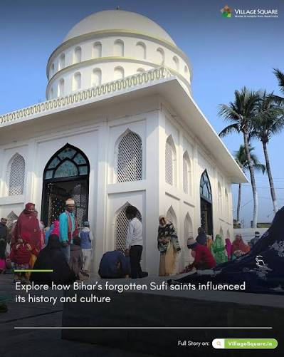
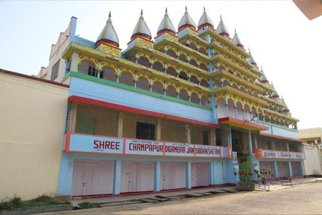
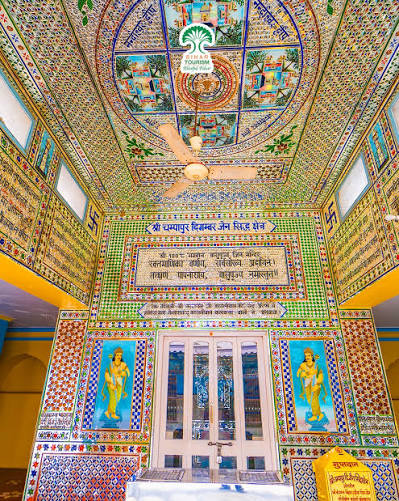
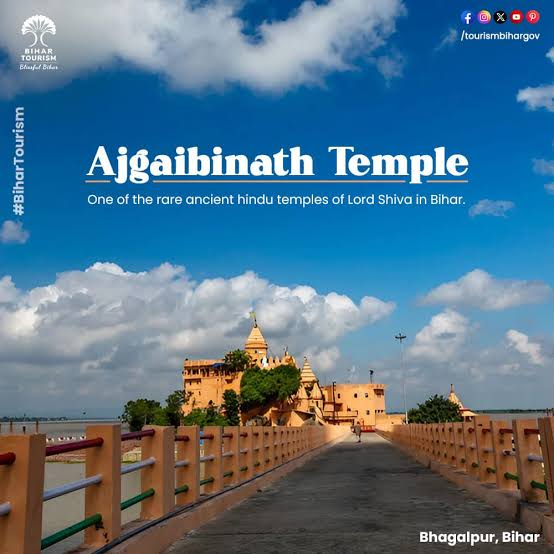

PLACES TO VISIT
Ghats, ruins, shrines, and a stretch of river where dolphins still surface.
Karnagarh
Ruins in the city popularly linked to Karna, the Mahabharata's warrior-king of Anga — a quiet, low-key site for anyone chasing the region's epic-era history.
Vikramshila Ruins (Antichak)
The excavated remains of an 8th–12th century Buddhist monastic university that once rivalled Nalanda — a stupa, monastery cells, and centuries of history a short drive from the city, near Kahalgaon.
Kuppaghat
A ghat on the Ganga best known for the ashram of Maharshi Mehi Paramhans, tied to the Sant Mat spiritual tradition — a quiet, contemplative riverside stop.

The Khanqah & Maulana Shahbaz's Mausoleum
Home to what's believed to be the oldest mosque in Bhagalpur, plus a library holding centuries-old Arabic and Persian manuscripts, including a Qur'an transcribed for the Nawab of Murshidabad.

Bhagalpur Museum
Near the Kachehri (district court), with sculptures, coins, deities, and manuscripts on display, plus a good view over the city and its ghats.
Champanagari (Champapur, Nathnagar)
The old Jain pilgrimage site marking the birthplace of Tirthankara Vasupujya — ornate temples on the site of the city's ancient predecessor settlement.


Mandar Hill (Bounsi)
A hill linked in legend to the churning of the cosmic ocean (Samudra Manthan), dotted with Jain temples and rock carvings, and popular with both pilgrims and trekkers.
Ajgaibinath Temple (Sultanganj)
A Shiva temple set on a rock in the middle of the Ganga, and the starting point for thousands of Kanwar Yatra pilgrims each year.

Vikramshila Gangetic Dolphin Sanctuary
A protected stretch of the Ganga, established in 1990, where the endangered Gangetic river dolphin can still be spotted from a boat.
Best time to go
Most visitors time a trip for October to March, when the weather is cooler and the ghats and ruins are far more comfortable to walk around than in the peak of summer or the monsoon.